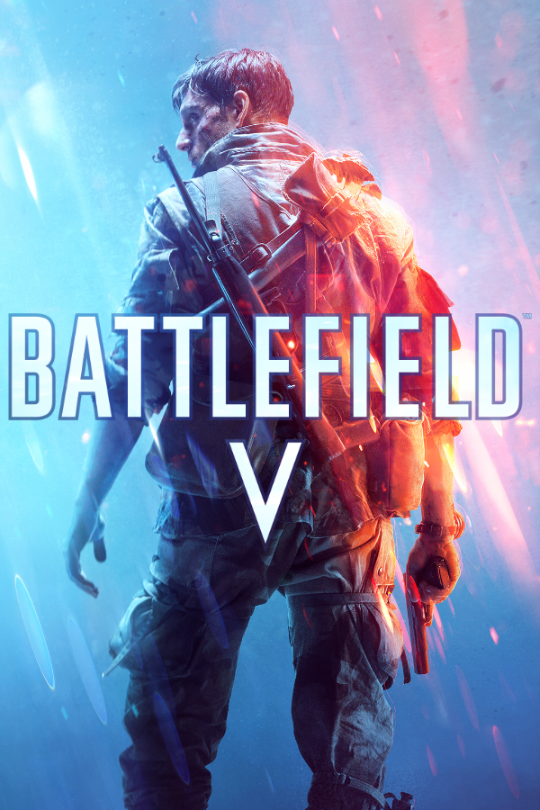
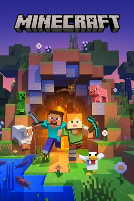
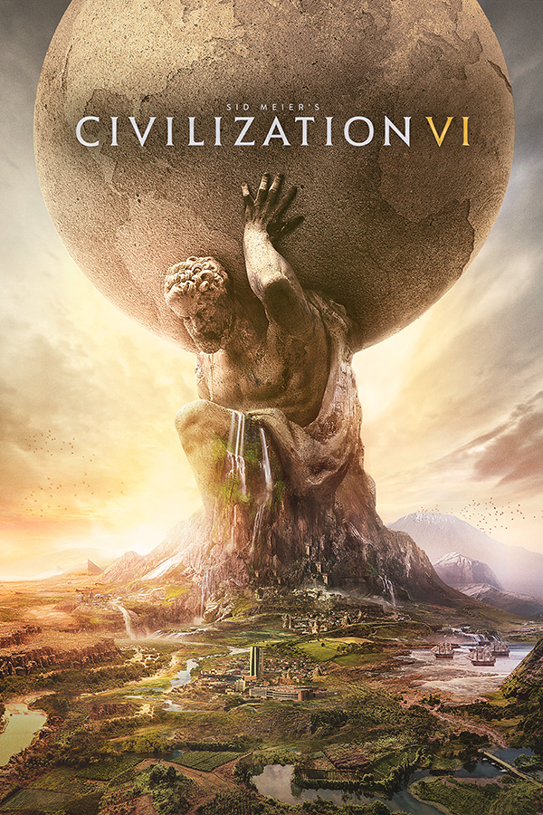
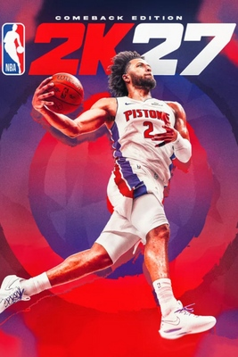
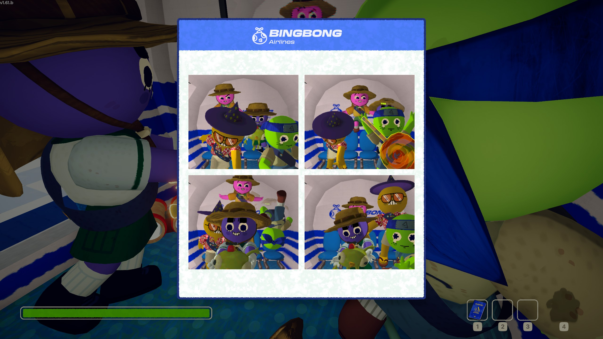

Home
Hey everyone! Welcome to my gaming journey! It all started when I was a kid. One day, I turned on a computer, clicked on a game called Seer, and unknowingly began a gaming adventure that would last for years.
Before turning 18, I spent most of my gaming time on mobile games. From the early days of Angry Birds to the competitive battles of Honor of Kings, I explored pretty much everything — casual games, adventures, exploration, puzzles, and even horror games. Apparently, I was never very picky about genres! Everything changed when I got my first laptop. That's when I really dove into the world of FPS games, including Counter-Strike, Overwatch, and Battlefield V. Along the way, I also discovered plenty of other amazing games, such as the NBA 2K series, Civilization VI, Assassin's Creed, Terraria, Minecraft, Human: Fall Flat, and Goose Goose Duck. From shooting enemies to building worlds, managing civilizations, and occasionally questioning my friends' loyalty, gaming has taken me on quite a journey. Curious to know more about my gaming adventures? Feel free to check out my Steam profile!
My Steam ProfileMy Gaming Library





My Gaming Hours
Where did all those hours go?
| Game | Genre | Playtime |
|---|---|---|
| Counter-Strike | FPS | 2000+ hours |
| Battlefield V | FPS | 285 hours |
| Civilization VI | Strategy | 160 hours |
| NBA2k | Sports | 600 hours |
| Human fall flat | RPG | 42 hours |
Playtime Comparison
Gaming Moments
